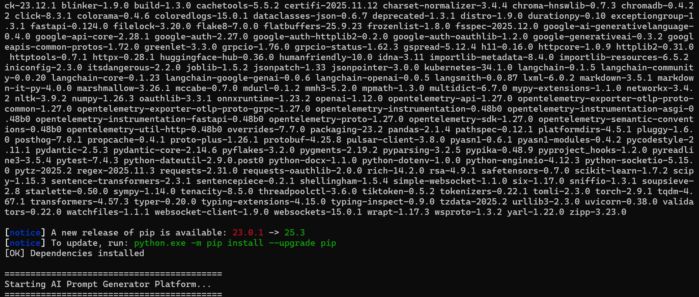
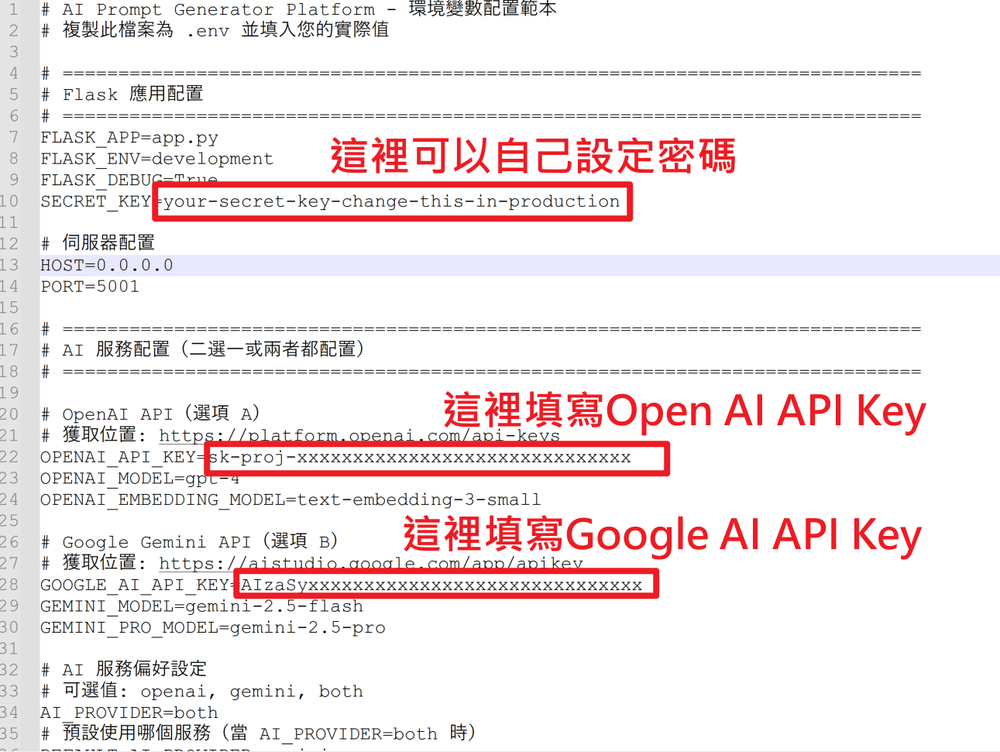
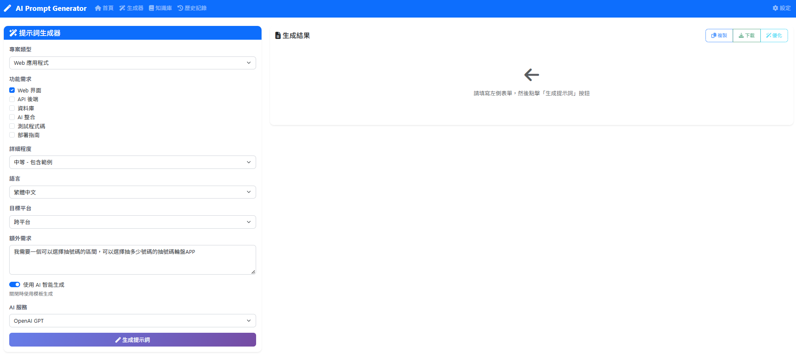
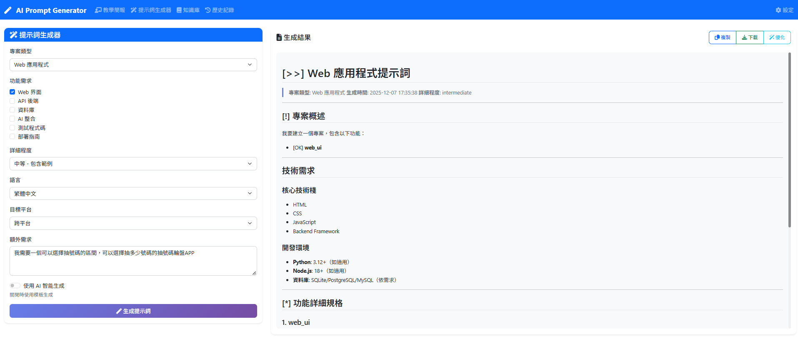
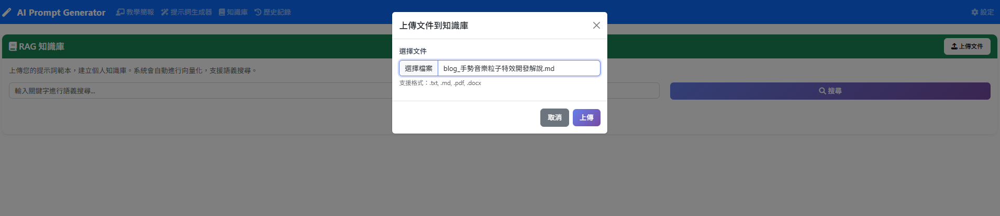
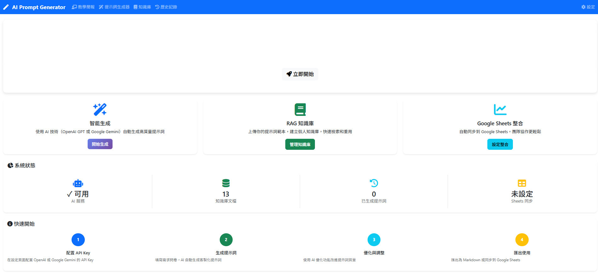

5 分鐘體驗專業級提示詞生成平台
填寫問卷自動生成專業提示詞，支援模板與 AI 生成兩種模式
上傳範本文件，建立個人知識庫，增強 AI 生成品質
AI 分析現有提示詞，提供改進建議與優化版本
同步到 Google Sheets，團隊共同維護提示詞庫
cd D:\自己架設AI_零基礎到大師\CH5_AI Prompt互動提示詞生成系統
start_windows.batcd CH5_AI_Prompt互動提示詞生成系統
chmod +x start.sh
./start.sh

編輯專案根目錄的 .env 檔案，填入您的 API Key：
GOOGLE_AI_API_KEY=AIzaSy-your-key-here
AI_PROVIDER=gemini
DEFAULT_AI_PROVIDER=geminiOPENAI_API_KEY=sk-proj-your-key-here
AI_PROVIDER=openai

打開瀏覽器，訪問 http://localhost:5001
點擊導航列的「生成器」，進入提示詞生成頁面

點擊「生成提示詞」按鈕後，系統會產出結構化的 Markdown 格式提示詞

點擊導航列的「知識庫」，進入 RAG 文件管理頁面
輸入查詢後，系統會在向量資料庫中尋找語義上最相關的內容片段

點擊導航列的「儀表板」，進入系統監控頁面
OpenAI 和 Gemini 的可用性
向量資料庫中的文件片段數
生成次數、模型分布、回應時間

在短短五分鐘內，您已經：